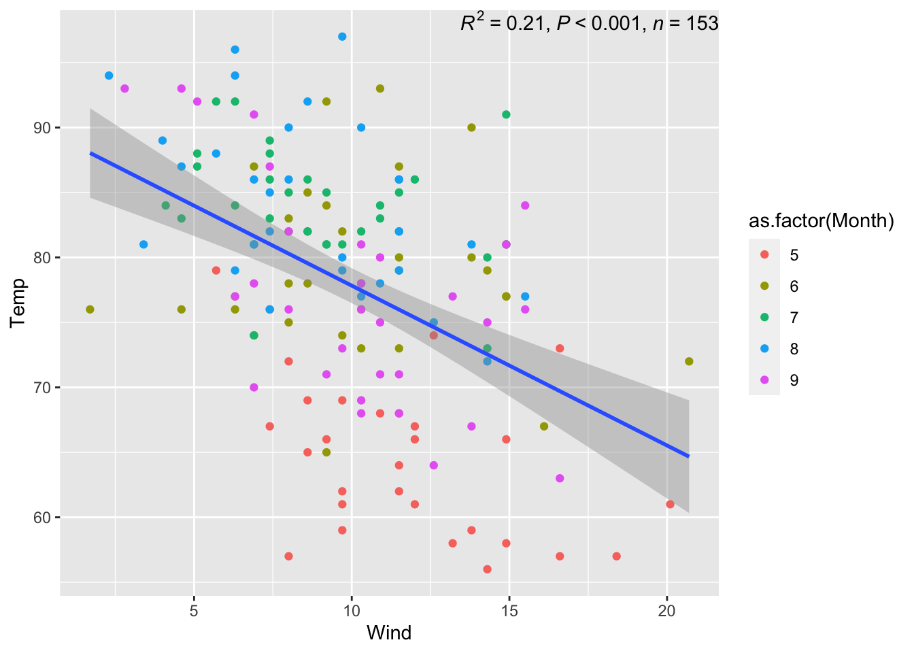
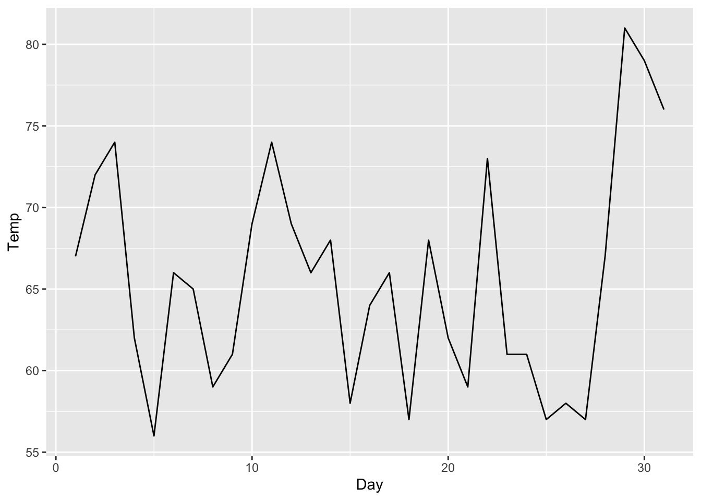
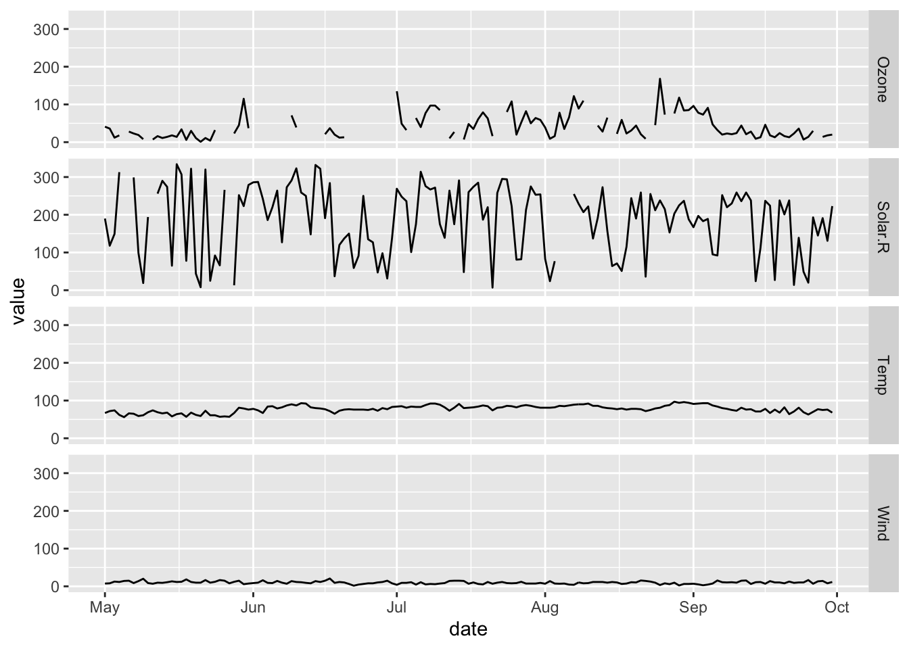
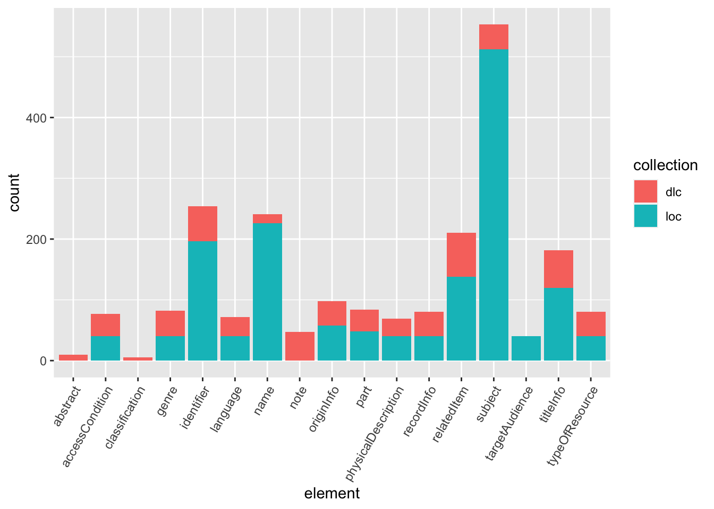
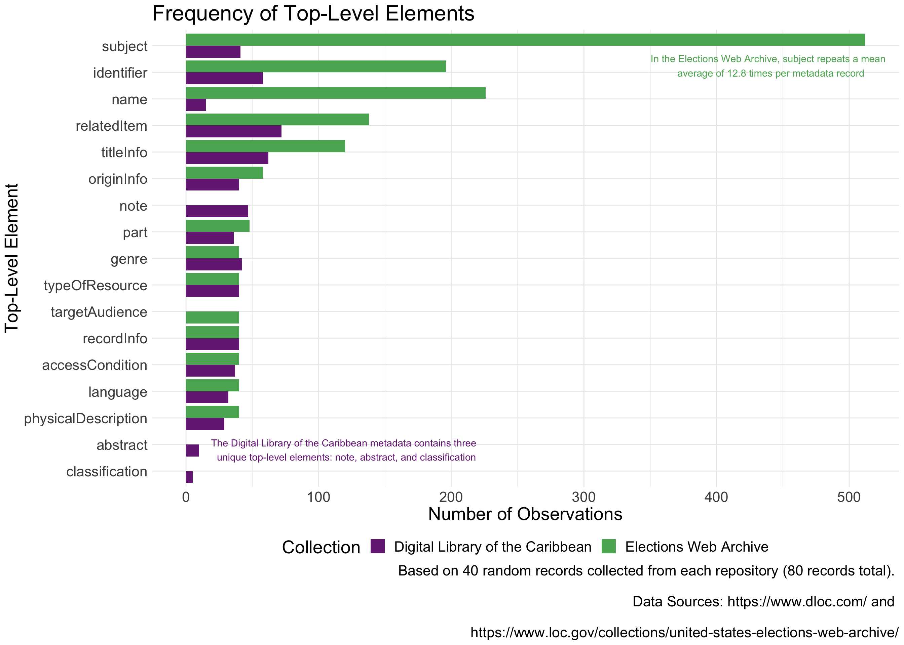

# Load Libraries
#install.packages("tidyverse")
library(tidyverse)
# Download Datasets
metadata <- read_csv("metadata.csv")
# airquality datasetggplot2 lingo
%>%; in ggplot we use
+ to add layersaes() = “aesthetics”; this is how we map
variables/other aestheticsgeom_ = “geometry”; these are built-in types of mapping
for plots (e.g. geom_bar() = bar chart,
geom_hist = histogram)ggplot2 than wide
dplyr::pivot_longer() will become your best friendggplot2 resources online# View the dataset to understand its structure (wide or long?), variables, data types
view(airquality)
library(ggpmisc)## Warning: package 'ggpmisc' was built under R version 4.1.2## Loading required package: ggpp## Warning: package 'ggpp' was built under R version 4.1.2##
## Attaching package: 'ggpp'## The following object is masked from 'package:ggplot2':
##
## annotate# Pipe the dataset into a ggplot() call
airquality %>%
# Set aesthetic mappings to the x and y axes for all geoms
ggplot(aes(x = Wind, y = Temp)) +
# Create a point layer
# geom_point() #+
# Change the aesthetic mappings of just the point layer
geom_point(aes(color = as.factor(Month))) +
# Add a trendline, alter the method used to create it
# geom_smooth() #+
geom_smooth(method = lm) +
# Add statistical information about the trendline, position it in the plot
stat_poly_eq(use_label(c("R2", "p", "n")),
label.x = 20,
label.y = 90)## `geom_smooth()` using formula = 'y ~ x'
# Manipulate the data before piping it into the ggplot() call
airquality %>% filter(Month == 5) %>%
# Set aesthetic mappings to the x and y axes for all geoms
ggplot(aes(x = Day, y = Temp)) +
# Create a line layer
geom_line()
#library(lubridate)
# Manipulate the data before piping it into the ggplot() call to create a new date column
#airquality %>% mutate(date = make_date(2000, Month, Day)) %>%
# ggplot(aes(x = date, y = Temp)) +
# geom_line()
library(lubridate)
# Manipulate the data before piping it into the ggplot() call to create a new date column
airquality %>% mutate(date = make_date(2000, Month, Day)) %>% select(-Month, -Day) %>%
# Pivot the data longer so we can plot all variables at once
pivot_longer(cols = c("Ozone", "Solar.R", "Wind", "Temp")) %>%
ggplot(aes(x = date, y = value)) +
geom_line() +
# Plot all the variables on the same plot as rows
facet_grid(name ~ .)
# View the dataset to understand its structure (wide or long?), variables, data types
view(metadata)
# Pipe the dataset into a ggplot() call
metadata %>%
# Set aesthetic mapping for just one variable
ggplot(aes(x = element)) +
# Create a histogram layer and set a statistical transformation for it
geom_histogram(stat = "count") +
# Change the angle of axis labels
theme(axis.text.x = element_text(angle = 60, vjust = 1, hjust=1)) +
# Change the color of geoms
geom_histogram(aes(fill = collection), stat = "count")## Warning in geom_histogram(stat = "count"): Ignoring unknown parameters:
## `binwidth`, `bins`, and `pad`## Warning in geom_histogram(aes(fill = collection), stat = "count"): Ignoring
## unknown parameters: `binwidth`, `bins`, and `pad`
# Flip x and y axis
coord_flip()## <ggproto object: Class CoordFlip, CoordCartesian, Coord, gg>
## aspect: function
## backtransform_range: function
## clip: on
## default: FALSE
## distance: function
## expand: TRUE
## is_free: function
## is_linear: function
## labels: function
## limits: list
## modify_scales: function
## range: function
## render_axis_h: function
## render_axis_v: function
## render_bg: function
## render_fg: function
## setup_data: function
## setup_layout: function
## setup_panel_guides: function
## setup_panel_params: function
## setup_params: function
## train_panel_guides: function
## transform: function
## super: <ggproto object: Class CoordFlip, CoordCartesian, Coord, gg>The plots we’ve just created are what I would consider “bare-minimum” visualizations. Here’s how we take them to the next level:
ggplot2 text sizes are generally too
small. Increasing the text size is an easy way to make more
accessible, professional looking plots. Read
more on accessible text here# Create a custom color palette
my_pal <- RColorBrewer::brewer.pal(11, "PRGn")[c(2, 9)]
library(ggtext)## Warning: package 'ggtext' was built under R version 4.1.2library(RColorBrewer)
# Manipulate data before piping it into the ggplot() call
metadata %>% group_by(element, collection) %>% mutate(count = n()) %>% distinct(element, count, collection) %>%
# Set aesthetic mapping for all layers
# Reorder a variable by its value
ggplot(aes(x = reorder(element, count), y = count, fill = collection)) +
# Create a column layer, set the columns to equal width
geom_col(position = position_dodge(preserve = "single")) +
# Flip the axes
coord_flip() +
# Add a default theme before theme alterations
theme_minimal() +
# Alter the legend position
theme(legend.position = "bottom",
# Alter the text size
text = element_text(size = 20)) +
# Add annotations, specify their position and color
annotate("text", y = 440, x = 16.25, label = "In the Elections Web Archive, subject repeats a mean \n average of 12.8 times per metadata record", color = my_pal[2]) +
annotate("text", y = 120, x = 1.8, label = "The Digital Library of the Caribbean metadata contains three \n unique top-level elements: note, abstract, and classification" , color = my_pal[1]) +
# Modify the titles, axes labels, and caption
labs(title = "Frequency of Top-Level Elements",
# subtitle = "Frequency of Top-Level Elements",
y = "Number of Observations",
x = "Top-Level Element",
caption = "Based on 40 random records collected from each repository (80 records total). \n
Data Sources: https://www.dloc.com/ and \n
https://www.loc.gov/collections/united-states-elections-web-archive/") +
# Add a custom color palette, alter the names for the legend and variables
scale_fill_manual(values = my_pal, name = "Collection",
labels=c("Digital Library of the Caribbean", "Elections Web Archive"))
# Save our plot
getwd()## [1] "/Users/joannaschroeder/Documents/R/intro-rmd-websites/web"ggsave("metadata_exploration-element_comparison_bar.png", plot = last_plot(),
height = 10, width = 14, units = "in", bg = "white")# Choose one of the example datasets (or another base R dataset if you know of one)
# Use `ggplot2` to explore and visualize the data
# Create a bare-miniumum visualization or two
# If we have time, take your bare-minimum visualization to the next level
# Report out your data story